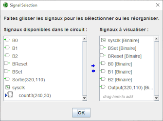

Sélection des signaux
Quand vous cliquez sur le bouton Ajouter ou supprimer des signaux de la fenêtre chronogram cela ouvre cette fenêtre. Celle-ci vous permet de sélectionner les valeurs à inclure dans la visualisation. La fenêtre ci-dessous correspond au circuit suivant:


La fenêtre est divisée en deux zones : à gauche on trouve la liste des signaux disponibles y compris ceux des sous-circuits. A droite la liste des signaux à suivre dans le chronogramme.
Pour ajouter des signaux au diagramme, sélectionnez, avec un click gauche, dans la liste de gauche le signale désiré ou plusieurs signaux avec un ctrl click gauche. Puis avec un click droit, glissez-les dans la liste de droite. Vous pouvez aussi cliquer sur la petite → bleu.
Pour supprimer des signaux sélectionez les avec un click gauche dans la liste de droite puis clic gauche sur la petite ← bleu
Pour réorganiser les signaux, sélectionnez les dans la liste de droite et avec un avec un click gauche maintenu déplacer les vers le haut ou le bas dans la colonne.
Quand vous sélectionez un signal dans la colonne de droit, un bouton Options apparait. Il permet de définir la base d'affichage. Et pour terminer, cliquez sur le bouton OK.
La valeur des étiquettes sera présentée si celle-ci est associée a un composant dans les autres cas c'est le nom et l'emplacement dans le circuit que sera utilisé pour référence.
Suite : Onglet chronogramme.